Introdução15.1
Até agora, os circuitos que estudamos eram combinacionais: para uma mesma combinação de entradas, a saída era sempre a mesma. Nesta aula isso muda. Vamos estudar circuitos que conseguem lembrar um valor anterior.
Esta aula usa como base o Capítulo 5, seções 5.1 a 5.10, de Sistemas Digitais: Princípios e Aplicações, de Ronald J. Tocci, Neal S. Widmer e Gregory L. Moss. O recorte principal vai dos latches com portas NAND e NOR até os flip-flops S-R, J-K e D, incluindo pulsos digitais, clock, latch D transparente e entradas assíncronas.
Um latch ou flip-flop é um elemento de memória de 1 bit. Ele mantém um estado interno, normalmente representado por $Q$, e só muda esse estado quando suas entradas são ativadas de uma forma específica.
O ponto mais importante da aula não é decorar tabelas. O ponto é entender a mudança de raciocínio: em circuitos sequenciais, a saída atual depende das entradas atuais e também do estado armazenado anteriormente.
Quando Um Circuito Precisa Lembrar15.2
Imagine um alarme simples. Um sensor detecta que uma porta foi aberta por um instante e depois volta ao normal. Se o circuito fosse puramente combinacional, a saída do alarme voltaria ao normal assim que o sensor voltasse ao normal. Mas talvez você queira outro comportamento: depois que o evento aconteceu, o alarme deve continuar ligado até alguém resetar o sistema.
Esse é o tipo de problema que exige memória. O circuito precisa guardar que algo aconteceu, mesmo que a entrada que causou o evento já tenha desaparecido.
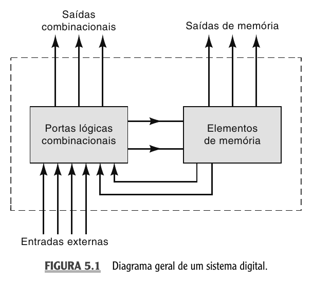
Em um sistema sequencial, a lógica combinacional ainda existe. A diferença é que algumas saídas alimentam elementos de memória e algumas saídas desses elementos voltam para a lógica combinacional. Essa realimentação faz com que o comportamento atual dependa de algo que ficou armazenado.
Se duas situações têm exatamente as mesmas entradas externas agora, mas chegaram a esse ponto por histórias diferentes, o circuito deve sempre responder igual?
Em circuitos combinacionais, a resposta é sim. Em circuitos sequenciais, a resposta pode ser não, porque o estado armazenado entra na decisão.
O elemento de memória mais básico é o flip-flop, frequentemente abreviado como FF. Ele possui duas saídas complementares:
$$ Q \qquad \text{e} \qquad \overline{Q} $$
A saída $Q$ é a saída normal. Quando dizemos que o flip-flop está em $1$, queremos dizer que $Q=1$. Quando dizemos que ele está em $0$, queremos dizer que $Q=0$. A saída $\overline{Q}$ normalmente tem o valor oposto.
$$ \begin{array}{c|c|c} Q & \overline{Q} & \text{Estado do elemento de memória} \\ \hline 1 & 0 & \text{setado ou armazenando } 1 \\ 0 & 1 & \text{resetado ou armazenando } 0 \end{array} $$
As palavras setar e resetar aparecem o tempo todo:
- setar significa levar $Q$ para $1$
- resetar ou limpar significa levar $Q$ para $0$
Quando um latch ou flip-flop é energizado, nem sempre é possível prever se ele começará em $Q=0$ ou $Q=1$. Se o circuito precisa começar em um estado específico, ele deve receber um sinal de inicialização, como reset ou preset.
Latch S-R Com Portas NAND15.3
O latch mais simples pode ser construído com duas portas NAND realimentadas. A saída de uma porta volta para a entrada da outra, e essa realimentação é o que cria a capacidade de manter um estado.
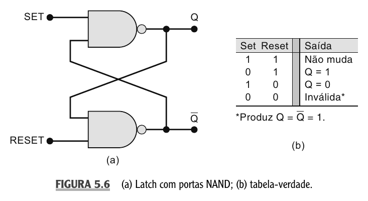
No latch NAND, as entradas são ativas em nível BAIXO. Para deixar isso explícito, vamos chamá-las de $\overline{S}$ e $\overline{R}$:
- $\overline{S}$ é a entrada de set ativa em $0$
- $\overline{R}$ é a entrada de reset ativa em $0$
A barra não significa que o sinal está sempre em $0$. Ela indica que a ação acontece quando o sinal vai para $0$.
$$ \begin{array}{c|c||c} \overline{S} & \overline{R} & \text{Efeito em } Q \\ \hline 1 & 1 & \text{mantém o estado anterior} \\ 0 & 1 & Q = 1 \,\text{ set} \\ 1 & 0 & Q = 0 \,\text{ reset} \\ 0 & 0 & \text{condição inválida} \end{array} $$
A linha mais importante da tabela é a primeira. Quando $\overline{S}=1$ e $\overline{R}=1$, nenhuma entrada está ativa. Mesmo assim, a saída não vira um valor aleatório a cada instante. Ela mantém o valor anterior. Essa é a característica de memória.
Agora observe a lógica de cada ação:
- se $\overline{S}=0$ e $\overline{R}=1$, a entrada de set é ativada e $Q$ vai para $1$
- se $\overline{S}=1$ e $\overline{R}=0$, a entrada de reset é ativada e $Q$ vai para $0$
- se $\overline{S}=0$ e $\overline{R}=0$, as duas ações são pedidas ao mesmo tempo e a condição não deve ser usada
Em latch NAND, repouso não é $0,0$. Repouso é $1,1$, porque as entradas são ativas em nível BAIXO. Se você esquecer isso, trocará completamente a leitura do circuito.
Um latch NAND começa com $Q=0$. As entradas passam pela sequência abaixo. Determine o valor de $Q$ após cada passo.
$$ \begin{array}{c|c|c} \text{Passo} & \overline{S} & \overline{R} \\ \hline 1 & 1 & 1 \\ 2 & 0 & 1 \\ 3 & 1 & 1 \\ 4 & 1 & 0 \\ 5 & 1 & 1 \end{array} $$
No passo 1, as duas entradas estão inativas, então o latch mantém $Q=0$. No passo 2, $\overline{S}=0$, então a entrada de set é ativada e $Q$ vai para $1$. No passo 3, o circuito volta ao repouso e mantém $Q=1$. No passo 4, $\overline{R}=0$, então a entrada de reset é ativada e $Q$ vai para $0$. No passo 5, o circuito volta ao repouso e mantém $Q=0$.
Esse exemplo mostra a ideia central do latch: a entrada ativa muda o estado, e a condição de repouso preserva o último estado válido.
Latch S-R Com Portas NOR15.4
Também é possível construir um latch S-R com duas portas NOR realimentadas. O comportamento geral é parecido com o do latch NAND, mas a convenção das entradas muda.
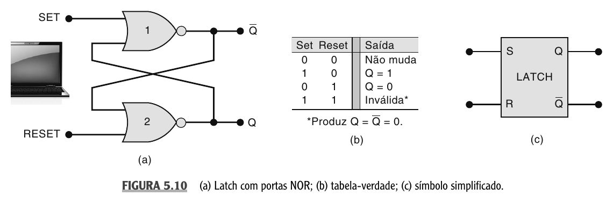
No latch NOR, as entradas $S$ e $R$ são ativas em nível ALTO. Por isso, o estado de repouso é $S=0$ e $R=0$.
$$ \begin{array}{c|c||c} S & R & \text{Efeito em } Q \\ \hline 0 & 0 & \text{mantém o estado anterior} \\ 1 & 0 & Q = 1 \,\text{ set} \\ 0 & 1 & Q = 0 \,\text{ reset} \\ 1 & 1 & \text{condição inválida} \end{array} $$
Repare na diferença de leitura. No latch NOR, aplicar $1$ em $S$ seta o latch. Aplicar $1$ em $R$ reseta o latch. No latch NAND, acontecia o contrário em termos de nível elétrico, porque as entradas eram ativas em $0$.
Latch NAND
$$ \begin{array}{c|c|c} \overline{S} & \overline{R} & \text{ação} \\ \hline 1 & 1 & \text{mantém} \\ 0 & 1 & \text{set} \\ 1 & 0 & \text{reset} \\ 0 & 0 & \text{inválida} \end{array} $$
Latch NOR
$$ \begin{array}{c|c|c} S & R & \text{ação} \\ \hline 0 & 0 & \text{mantém} \\ 1 & 0 & \text{set} \\ 0 & 1 & \text{reset} \\ 1 & 1 & \text{inválida} \end{array} $$
O erro mais comum é tentar decorar apenas a palavra set ou reset e esquecer o nível ativo da entrada. A pergunta correta é sempre: esta entrada é ativa em nível alto ou em nível baixo?
Pulsos, Clock E Bordas15.5
Os latches que acabamos de estudar mudam de estado assim que uma entrada ativa aparece. Isso é útil em alguns casos, mas pode ser difícil de controlar em sistemas maiores. Se vários sinais mudam em momentos ligeiramente diferentes, a saída pode mudar em instantes indesejados.
Para organizar a mudança de estado, sistemas digitais usam pulsos e, principalmente, um sinal de clock.
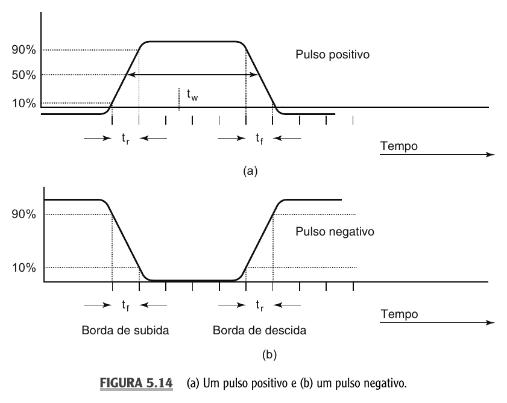
Um pulso positivo é ativo quando vai para nível ALTO. Um pulso negativo é ativo quando vai para nível BAIXO. As transições são chamadas de bordas:
- borda de subida é a transição de $0$ para $1$
- borda de descida é a transição de $1$ para $0$
Em um clock periódico, o intervalo de um ciclo completo é o período $T$. A frequência $f$ indica quantos ciclos ocorrem por segundo.
$$ f = \frac{1}{T} $$
Se as entradas de um circuito mudam várias vezes enquanto o clock está em nível ALTO, é melhor que a saída acompanhe todas essas mudanças ou que ela mude apenas em um instante bem definido?
Na maior parte dos sistemas síncronos, queremos que a mudança ocorra apenas em instantes definidos. Para isso usamos flip-flops com clock. Neles, as entradas de controle dizem o que deve acontecer, mas o clock diz quando isso pode acontecer.
Há dois parâmetros de temporização importantes:
- tempo de setup, que é o tempo mínimo em que a entrada precisa estar estável antes da borda ativa
- tempo de hold, que é o tempo mínimo em que a entrada precisa permanecer estável depois da borda ativa
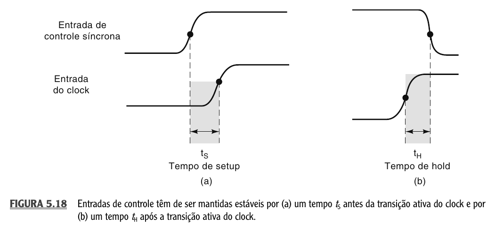
Se esses tempos forem violados, o flip-flop pode responder de forma não confiável. Em uma aula introdutória, o mais importante é guardar a ideia: a borda do clock não é mágica. O circuito interno precisa que os sinais de controle estejam estáveis perto da borda ativa.
Flip-Flop S-R Com Clock15.6
O flip-flop S-R com clock é uma versão sincronizada da ideia do latch S-R. As entradas $S$ e $R$ continuam indicando set e reset, mas elas só afetam $Q$ quando ocorre a borda ativa do clock.
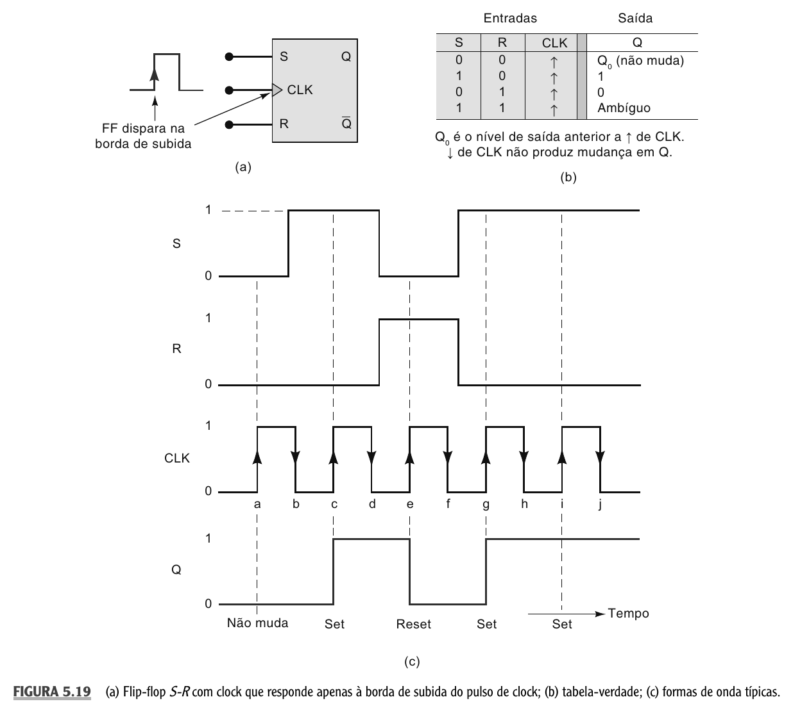
Vamos considerar um flip-flop S-R disparado na borda de subida. A tabela funcional é:
$$ \begin{array}{c|c|c||c} S & R & CLK & Q^+ \\ \hline 0 & 0 & \uparrow & Q_0 \\ 1 & 0 & \uparrow & 1 \\ 0 & 1 & \uparrow & 0 \\ 1 & 1 & \uparrow & \text{ambíguo} \end{array} $$
Aqui, $Q_0$ representa o estado anterior e $Q^+$ representa o novo estado depois da borda ativa. A seta $\uparrow$ indica que a ação ocorre na borda de subida do clock.
Observe que $S=1$ e $R=0$ não setam a saída imediatamente. Eles deixam o flip-flop preparado para setar. A mudança só acontece quando ocorre a borda ativa de $CLK$.
Um flip-flop S-R disparado na borda de subida começa com $Q=0$. Nas quatro bordas de subida consecutivas, as entradas têm os valores abaixo. Determine $Q$ após cada borda.
$$ \begin{array}{c|c|c} \text{Borda} & S & R \\ \hline 1 & 0 & 0 \\ 2 & 1 & 0 \\ 3 & 1 & 0 \\ 4 & 0 & 1 \end{array} $$
Na primeira borda, $S=0$ e $R=0$, então o flip-flop mantém $Q=0$. Na segunda borda, $S=1$ e $R=0$, então $Q$ vai para $1$. Na terceira borda, a condição continua sendo set, então $Q$ permanece em $1$. Na quarta borda, $S=0$ e $R=1$, então $Q$ vai para $0$.
A saída resultante após as quatro bordas é:
$$ Q: \quad 0,\ 1,\ 1,\ 0 $$
O flip-flop S-R é didático porque mostra claramente o papel do clock. Mas ele ainda carrega um problema: a condição $S=R=1$ é ambígua e não deve ser usada.
Flip-Flop J-K15.7
O flip-flop J-K resolve a condição ambígua do S-R. Ele se comporta de forma parecida com o S-R nas três primeiras combinações, mas quando $J=1$ e $K=1$, ele não entra em estado inválido. Ele comuta.
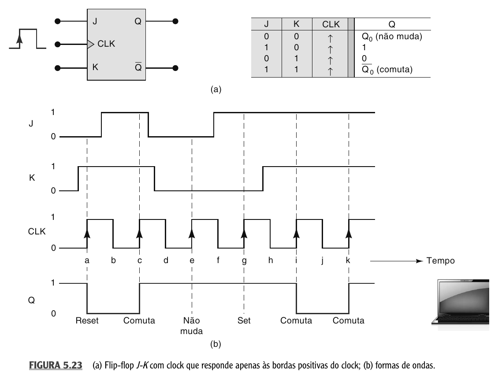
A tabela funcional do flip-flop J-K disparado na borda de subida é:
$$ \begin{array}{c|c|c||c} J & K & CLK & Q^+ \\ \hline 0 & 0 & \uparrow & Q_0 \\ 1 & 0 & \uparrow & 1 \\ 0 & 1 & \uparrow & 0 \\ 1 & 1 & \uparrow & \overline{Q_0} \end{array} $$
A última linha é a principal diferença. Se $J=K=1$, o novo estado será o inverso do estado anterior. Se $Q_0=0$, então $Q^+=1$. Se $Q_0=1$, então $Q^+=0$.
Essa operação é chamada de toggle ou comutação. Ela é muito importante porque permite construir contadores. Um flip-flop que comuta a cada borda ativa alterna entre $0$ e $1$ continuamente.
Um flip-flop J-K começa com $Q=0$. As entradas ficam fixas em $J=1$ e $K=1$. Determine $Q$ após quatro bordas ativas do clock.
Como $J=K=1$, cada borda ativa inverte o estado anterior.
$$ \begin{array}{c|c|c} \text{Borda} & \text{Estado anterior} & \text{Novo estado} \\ \hline 1 & 0 & 1 \\ 2 & 1 & 0 \\ 3 & 0 & 1 \\ 4 & 1 & 0 \end{array} $$
Portanto, a sequência de $Q$ é:
$$ 1,\ 0,\ 1,\ 0 $$
Esse é o comportamento que depois será usado para construir contadores binários.
Flip-Flop D15.8
O flip-flop D é o mais direto para armazenamento de dados. Ele possui uma única entrada de controle síncrona, chamada $D$. Na borda ativa do clock, a saída $Q$ recebe o valor que estava em $D$ naquele instante.
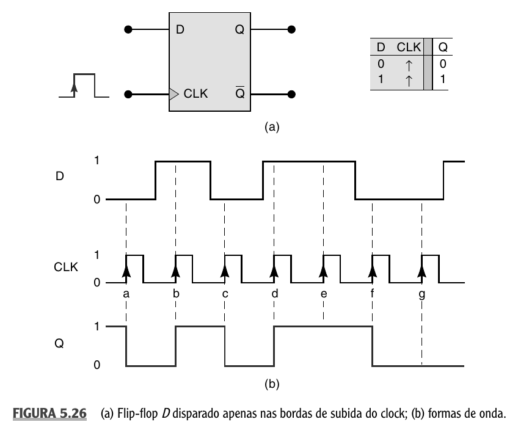
A tabela funcional é pequena:
$$ \begin{array}{c|c||c} D & CLK & Q^+ \\ \hline 0 & \uparrow & 0 \\ 1 & \uparrow & 1 \end{array} $$
O flip-flop D pode ser lido como um amostrador de 1 bit. Ele olha para $D$ apenas no instante da borda ativa e guarda esse valor em $Q$ até a próxima borda ativa.
Isso explica por que $D$ e $Q$ não são simplesmente o mesmo sinal. Se $D$ mudar entre duas bordas de clock, $Q$ não precisa mudar. $Q$ só será atualizado quando chegar a próxima borda ativa.
O flip-flop D é a base de registradores. Se você coloca vários flip-flops D lado a lado e aplica o mesmo clock a todos eles, consegue armazenar vários bits simultaneamente.
Latch D Transparente15.9
O latch D parece com o flip-flop D porque também armazena um dado. A diferença está no momento em que a saída pode mudar. O flip-flop D é sensível à borda do clock. O latch D é sensível ao nível da entrada de habilitação $EN$.
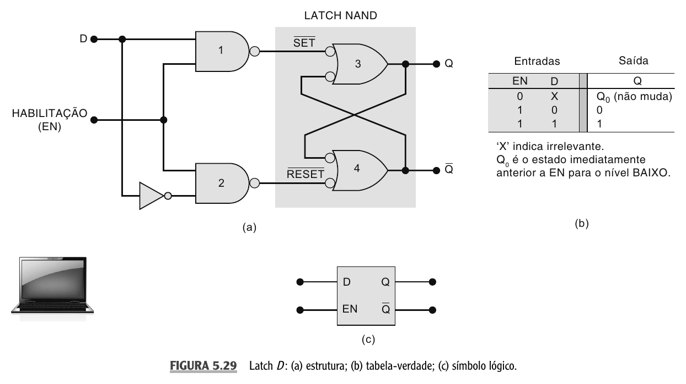
A tabela funcional do latch D é:
$$ \begin{array}{c|c||c} EN & D & Q^+ \\ \hline 0 & X & Q_0 \\ 1 & 0 & 0 \\ 1 & 1 & 1 \end{array} $$
Quando $EN=1$, o latch está transparente. Isso significa que $Q$ acompanha $D$. Se $D$ mudar, $Q$ muda junto. Quando $EN=0$, o latch fecha e mantém o último valor armazenado.
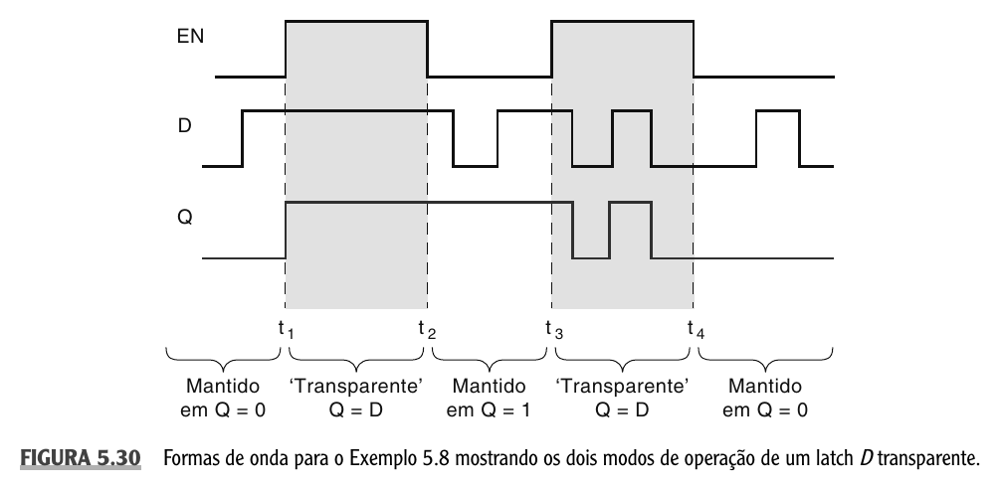
Compare um flip-flop D disparado na borda de subida com um latch D. Nos dois casos, considere que $Q$ começa em $0$.
No primeiro intervalo, $D$ vai para $1$. Depois, ainda antes da próxima borda de clock, $D$ volta para $0$. O que acontece em cada dispositivo?
No flip-flop D, $Q$ só muda na borda ativa. Se a borda de subida ocorrer depois que $D$ já voltou para $0$, o flip-flop armazenará $0$. A mudança temporária de $D$ para $1$ não será capturada.
No latch D, se $EN=1$ durante esse intervalo, $Q$ acompanhará $D$. Ele irá para $1$ enquanto $D=1$ e voltará para $0$ quando $D$ voltar para $0$. Se $EN$ depois cair para $0$, o latch manterá o valor que $Q$ tinha naquele instante.
A diferença é esta: o flip-flop D amostra em uma borda, enquanto o latch D fica transparente durante um nível de habilitação.
Um latch transparente pode deixar mudanças indesejadas passarem enquanto $EN=1$. Em sistemas síncronos, flip-flops disparados por borda costumam ser mais fáceis de controlar.
Entradas Assíncronas15.10
As entradas $S$, $R$, $J$, $K$ e $D$ que vimos nos flip-flops com clock são entradas síncronas, porque só afetam a saída quando ocorre a borda ativa do clock.
Muitos flip-flops também possuem entradas assíncronas. Elas são chamadas assim porque atuam independentemente do clock. As mais comuns são:
- $PRE$, de preset, que força $Q=1$
- $CLR$, de clear, que força $Q=0$
Em muitos circuitos integrados, essas entradas são ativas em nível BAIXO. Nesse caso, podemos representá-las como $\overline{PRE}$ e $\overline{CLR}$.
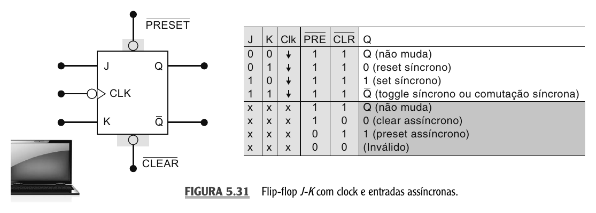
A tabela essencial das entradas assíncronas ativas em nível BAIXO é:
$$ \begin{array}{c|c||c} \overline{PRE} & \overline{CLR} & \text{Efeito em } Q \\ \hline 1 & 1 & \text{operação síncrona normal} \\ 0 & 1 & Q = 1 \,\text{ imediatamente} \\ 1 & 0 & Q = 0 \,\text{ imediatamente} \\ 0 & 0 & \text{condição inválida} \end{array} $$
A palavra importante é imediatamente. Se $\overline{CLR}=0$, o flip-flop vai para $Q=0$ sem esperar a próxima borda de clock. Se $\overline{PRE}=0$, ele vai para $Q=1$ sem esperar a próxima borda de clock.
Um flip-flop J-K tem entradas assíncronas ativas em nível BAIXO. Inicialmente, $Q=1$, $J=1$, $K=1$, $\overline{PRE}=1$ e $\overline{CLR}=1$. Em seguida, $\overline{CLR}$ vai momentaneamente para $0$. O que acontece com $Q$?
Como $\overline{CLR}=0$, a entrada assíncrona de clear está ativa. Portanto, $Q$ vai imediatamente para $0$, independentemente de $J$, $K$ e $CLK$.
Enquanto $\overline{CLR}=0$, o clock não consegue fazer o flip-flop comutar, mesmo com $J=K=1$. Quando $\overline{CLR}$ volta para $1$, a operação síncrona normal é liberada. A partir daí, nas próximas bordas ativas, $J=K=1$ fará o flip-flop comutar.
Não trate $PRE$ e $CLR$ como se fossem entradas normais de dados. Elas se sobrepõem à lógica síncrona e são usadas principalmente para inicialização, reset ou controle emergencial de estado.
Comparando Os Elementos de Memória15.11
A tabela abaixo resume a leitura prática dos principais dispositivos desta aula.
$$ \begin{array}{c|c|c|c} \text{Dispositivo} & \text{Tipo de disparo} & \text{Entrada principal} & \text{Ideia central} \\ \hline \text{Latch NAND S-R} & \text{nível} & \overline{S},\overline{R} & \text{set/reset ativos em }0 \\ \text{Latch NOR S-R} & \text{nível} & S,R & \text{set/reset ativos em }1 \\ \text{FF S-R} & \text{borda de clock} & S,R & \text{set/reset sincronizados} \\ \text{FF J-K} & \text{borda de clock} & J,K & \text{S-R sem condição ambígua, com toggle} \\ \text{FF D} & \text{borda de clock} & D & \text{armazena }D\text{ na borda ativa} \\ \text{Latch D} & \text{nível de }EN & D,EN & \text{transparente quando }EN=1 \end{array} $$
Se você precisar decidir qual usar, comece pela pergunta funcional:
- preciso lembrar um set ou reset simples? Latch S-R pode resolver
- preciso sincronizar a mudança com clock? Use flip-flop
- preciso alternar estado a cada pulso? O J-K em toggle é adequado
- preciso armazenar um bit de dado em um instante específico? O D é o mais natural
- preciso que a saída siga a entrada enquanto habilitada? Use latch D
Questões15.12
1. Explique a diferença entre um circuito combinacional e um circuito sequencial.
2. Um elemento de memória tem $Q=1$ e $\overline{Q}=0$. Como esse estado é chamado? O que significa resetar esse elemento?
3. Em um latch NAND, as entradas são $\overline{S}$ e $\overline{R}$. Partindo de $Q=0$, determine $Q$ após a sequência: $(1,1)$, $(0,1)$, $(1,1)$, $(1,0)$, $(1,1)$.
4. Em um latch NOR, qual é a condição de repouso? Qual é a condição inválida?
5. Explique a diferença entre borda de subida, borda de descida e nível ativo de um pulso.
6. Um flip-flop S-R disparado na borda de subida começa com $Q=1$. Nas três bordas seguintes, as entradas são $(S,R)=(0,0)$, $(0,1)$ e $(1,0)$. Determine $Q$ após cada borda.
7. Um flip-flop J-K começa com $Q=1$ e recebe cinco bordas ativas com $J=K=1$. Qual será a sequência de valores de $Q$ após cada borda?
8. Em um flip-flop D disparado na borda de subida, $D$ muda de $0$ para $1$ e depois volta para $0$ antes da próxima borda. Se no instante da borda $D=0$, qual valor será armazenado em $Q$?
9. Explique a diferença entre um latch D transparente e um flip-flop D disparado por borda.
10. Um flip-flop possui $\overline{PRE}$ e $\overline{CLR}$ ativos em nível BAIXO. O que acontece quando $\overline{CLR}=0$? O clock ainda consegue alterar $Q$ enquanto $\overline{CLR}=0$?
1. Em um circuito combinacional, a saída depende apenas das entradas atuais. Em um circuito sequencial, a saída depende das entradas atuais e também do estado armazenado anteriormente.
2. Esse é o estado setado, ou estado $1$. Resetar significa levar $Q$ para $0$ e, normalmente, $\overline{Q}$ para $1$.
3. No latch NAND, $(1,1)$ mantém o estado, $(0,1)$ seta e $(1,0)$ reseta. A sequência de $Q$ é $0$, $1$, $1$, $0$, $0$.
4. No latch NOR, a condição de repouso é $S=0$ e $R=0$. A condição inválida é $S=1$ e $R=1$.
5. Borda de subida é a transição de $0$ para $1$. Borda de descida é a transição de $1$ para $0$. Nível ativo indica se a ação do pulso ocorre enquanto o sinal está em $1$ ou enquanto está em $0$.
6. Inicialmente $Q=1$. Na primeira borda, $(0,0)$ mantém $Q=1$. Na segunda, $(0,1)$ reseta e $Q=0$. Na terceira, $(1,0)$ seta e $Q=1$. A sequência é $1$, $0$, $1$.
7. Com $J=K=1$, cada borda comuta o estado. Partindo de $Q=1$, a sequência após cinco bordas é $0$, $1$, $0$, $1$, $0$.
8. Será armazenado $0$, porque o flip-flop D captura o valor presente em $D$ no instante da borda ativa. Mudanças entre bordas não alteram $Q$ diretamente.
9. O latch D é sensível ao nível de habilitação. Quando $EN=1$, $Q$ acompanha $D$. O flip-flop D é sensível à borda do clock. Ele copia $D$ apenas no instante da borda ativa.
10. Quando $\overline{CLR}=0$, a entrada clear assíncrona está ativa e força $Q=0$ imediatamente. Enquanto $\overline{CLR}=0$, o clock não consegue alterar $Q$.
Próximos passos15.13
Nesta aula, você viu como a realimentação permite armazenar 1 bit e como o clock controla o momento em que esse bit muda. Latches e flip-flops são a base da lógica sequencial. Na próxima aula, vamos usar esses blocos para construir estruturas maiores, como registradores e contadores.